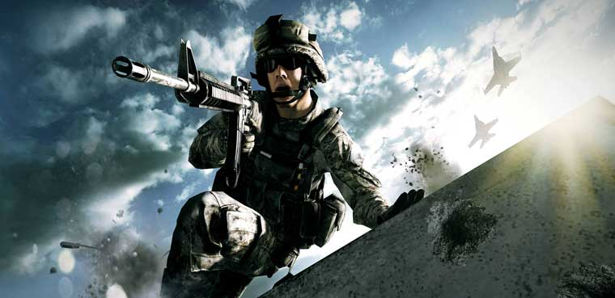

Este Es El Inicio De La Pagina
Vamos Al Final De La Pagina
¿Que Son Los Shooters?
son un género que engloban un amplio número de subgéneros que tienen la característica común de permitir controlar un personaje que, por norma general, dispone de un arma (mayoritariamente de fuego) que puede ser disparada a voluntad.
(Si Quiere Entrar A La Pagina Oficial De Activision, Da Click A La Imagen)

Sus Tipos De Perspectiva
El jugador puede ver disparos en primera persona (first person shooter) o desde una cámara que sigue al personaje por la espalda desde una cierta distancia y elevación (tercera persona). También es posible (aunque poco frecuente en el género) encontrar juegos que disponen de una cámara fija.
(Si Quiere Entrar A La Pagina Oficial De EA, Da Click A La Imagen)

Vamos Al Principio De La Pagina
Este Es El Final De La Pagina